Exports Reports
Side Menu
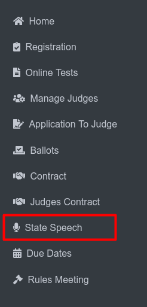To access Export Reports, first navigate to the Speech State section from the side menu.
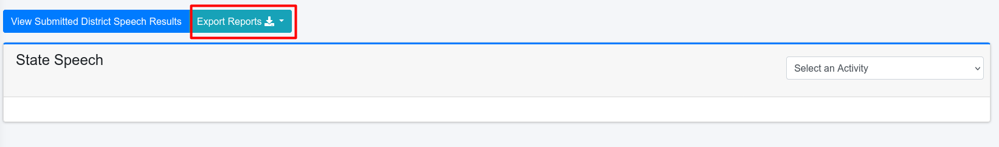{kind=link}
Click the Exports Reports button on the Speech State page to export the data you need.
Judges Reports
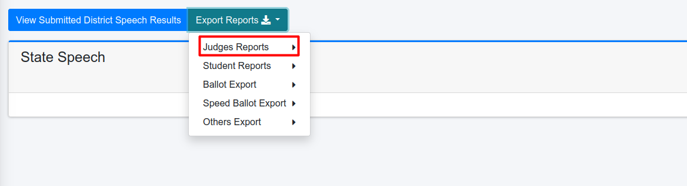{kind=link}
To export judges’ reports, users must click the “Judges Report” dropdown menu.
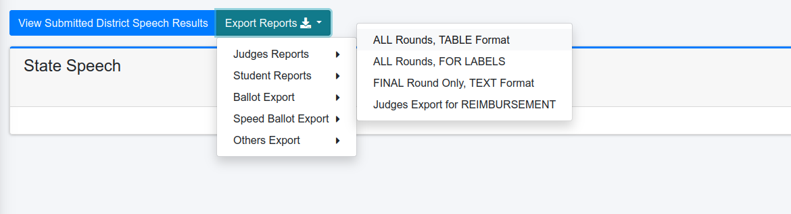{kind=link}
The “Judges Reports” option is located within the “Export Reports” dropdown menu. Clicking the “Judges Reports” option will reveal a submenu with the following options:
ALL Rounds, TABLE Format: By clicking this option it will redirects to a view page.
ALL Rounds, FOR LABELS: This option exports ALL Rounds, FOR LABELS in xlsx format.
FINAL Round Only, TEXT Format: This option exports FINAL Round Only, TEXT Format in pdf format.
Judges Export for REIMBURSEMENT: This option exports judging data specifically for reimbursement purposes in pdf format.
{kind=link}
This page likely appears after selecting the “ALL Rounds, TABLE Format” option from the “Judges Reports” menu.
Day Selection: (1) The user can choose to view judge assignments for “Thursday,” “Friday,” or “All Days” by clicking on the respective button. This allows for filtering the data based on the desired day(s).
Export Button: (2) The “Export” button, located in the top right corner, enables users to export the displayed judge assignment data in a specific format, such as a xlsx file. This allows for easy sharing or further analysis of the data.
Students Reports
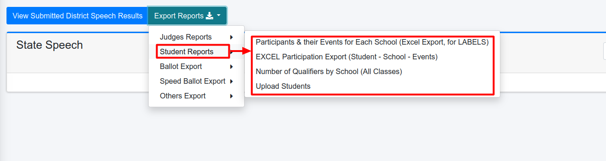{kind=link}
When the user clicks on the “Student Reports” option, a submenu appears with several export choices related to student data:
Participants & their Events for Each School (Excel Export, for LABELS): This option exports a list of participants and the events they are registered for, organized by school. The exported data is formatted for use with labels and is in XLSX format.
EXCEL Participation Export (Student - School - Events): This option exports student participation data in an Excel format, including information about the student, their school, and the events they are participating in. This export is also in XLSX format.
Number of Qualifiers by School (All Classes): This option exports a list of schools and the number of qualifiers they have in each class category. This export is in PDF format.
Upload Students: This option allows users to upload a list of students to the system.
By selecting any of these options, the user can generate specific student-related reports for further analysis or administrative tasks.
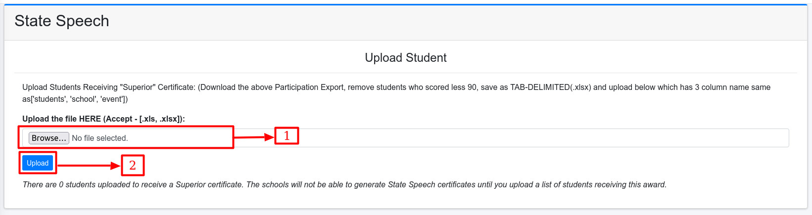{kind=link}
This page likely appears after selecting the “Upload Students” (4) option from the “Students Reports” menu.
Ballot Export
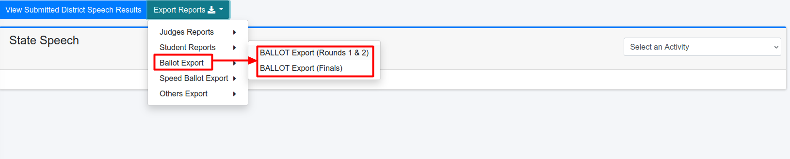{kind=link}
When the user clicks on the “Ballot Export” option, a submenu appears with two export choices related to ballot data:
BALLOT Export (Rounds 1 & 2): This option exports ballot data for the first two rounds of competition.
BALLOT Export (Finals): This option exports ballot data for the final round of competition.
By selecting either of these options, the user can generate specific ballot-related reports for further analysis or review.
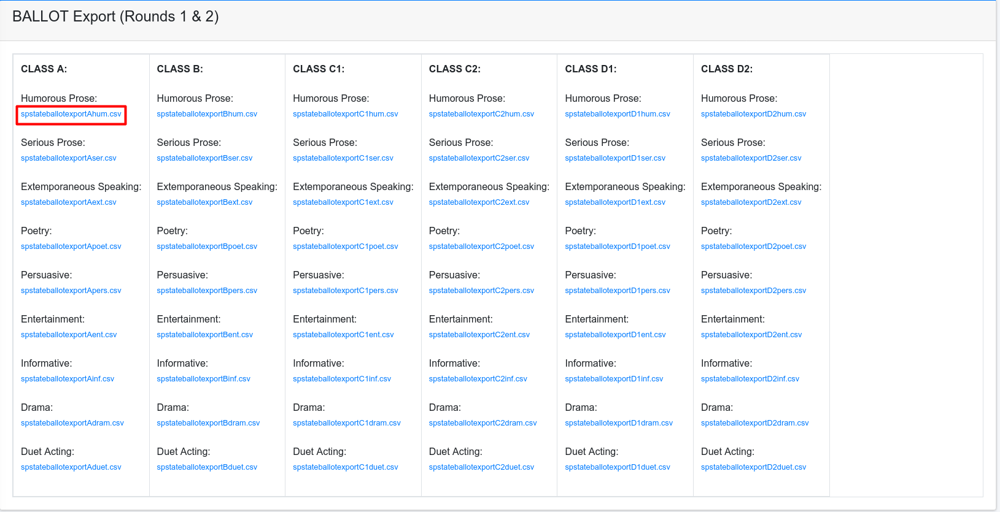{kind=link}
This is the BALLOT Export (Rounds 1 & 2) page. It displays exports categorized by class and event. To export data, click the respective CSV file link for a specific class and event.
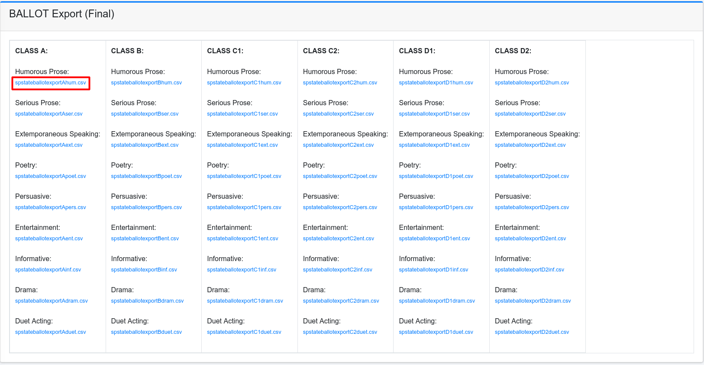{kind=link}
This is the BALLOT Export (Finals) page. It displays exports categorized by class and event. To export data, click the respective CSV file link for a specific class and event.
Speed Ballot Export
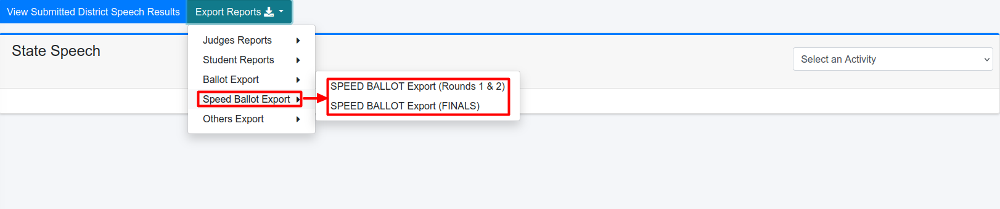{kind=link}
When the user clicks on the “Speed Ballot Export” option, a submenu appears with two export choices related to ballot data:
SPEED BALLOT Export (Rounds 1 & 2): This option exports ballot data for the first two rounds of competition.
SPEED BALLOT Export (FINALS): This option exports ballot data for the final round of competition.
By selecting either of these options, the user can generate specific ballot-related reports for further analysis or review.
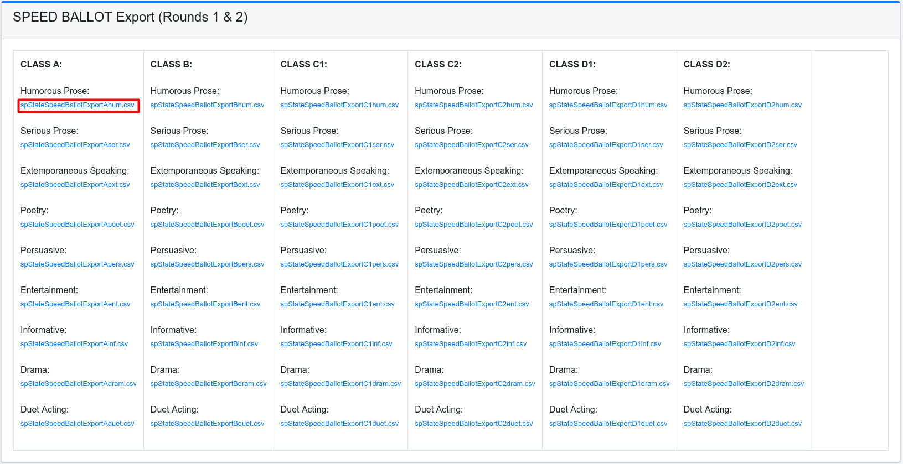{kind=link}
This is the SPEED BALLOT Export (Rounds 1 & 2) page. It displays exports categorized by class and event. To export data, click the respective CSV file link for a specific class and event.
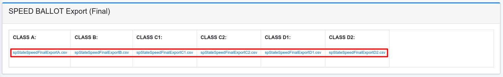{kind=link}
This is the SPEED BALLOT Export (FINALS) page. It displays exports categorized by class. To export data, click the respective CSV file link for a specific class and event.
Others Export
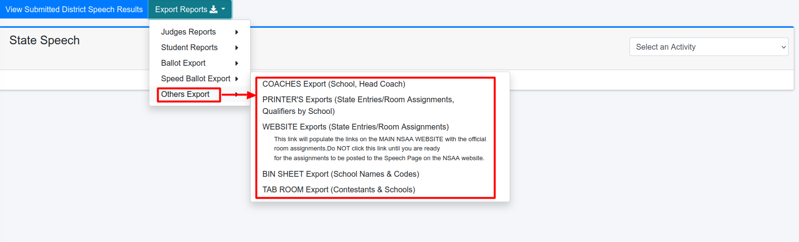{kind=link}
When the user clicks on the “Others Export” option, a submenu appears with several export choices related to various aspects of the competition:
COACHES Export (School, Head Coach): This option exports a list of schools and their head coaches in xlsx format.
PRINTERS Exports (State Entries/Room Assignments, Qualifiers by School): This option exports various documents for use by printers, including lists of state entries, room assignments, and qualifiers by school.
WEBSITE Exports (State Entries/Room Assignments): This option exports data for populating the NSAA website with state entries and room assignments.
BIN SHEET Export (School Names & Codes): This option exports a list of school names and codes, likely for use in creating bin sheets for judging ballots.
TAB ROOM Export (Contestants & Schools): This option exports a list of contestants and their schools, likely for use in the tab room for tracking results and assigning awards.
PRINTERS Exports
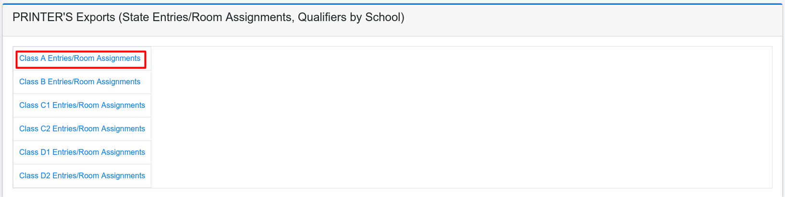{kind=link}
Each option corresponds to a different class category (A, B, C1, C2, D1, and D2) for Printers Exports. When you click on one of these options, it will export a specific document related to that class.
WEBSITE Exports
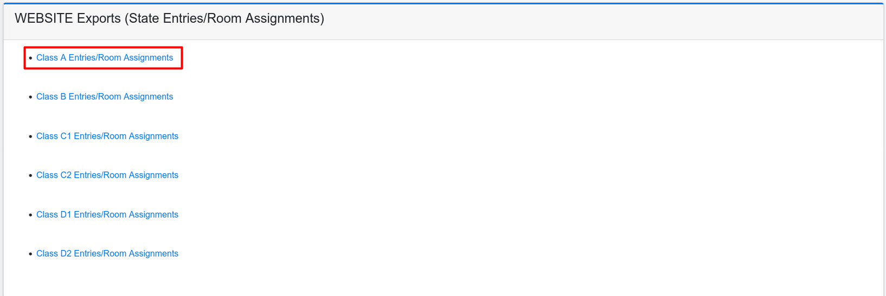{kind=link}
Each option corresponds to a different class category (A, B, C1, C2, D1, and D2) for Website Exports. When you click on one of these options, it will export a specific document related to that class.
Bin Sheet Exports
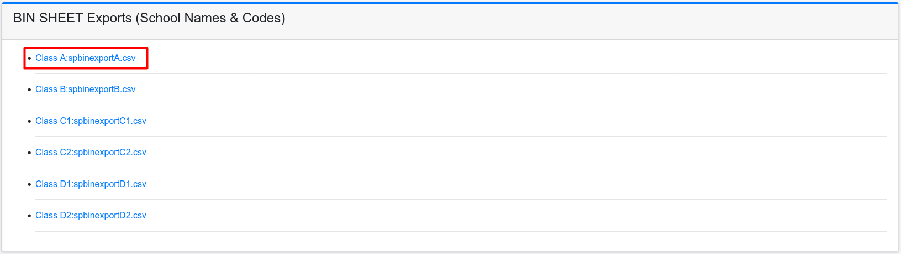{kind=link}
Each option corresponds to a different class category (A, B, C1, C2, D1, and D2) for Bin Sheet Exports. When you click on one of these options, it will export a specific CSV file related to that class.
Tab Room Exports
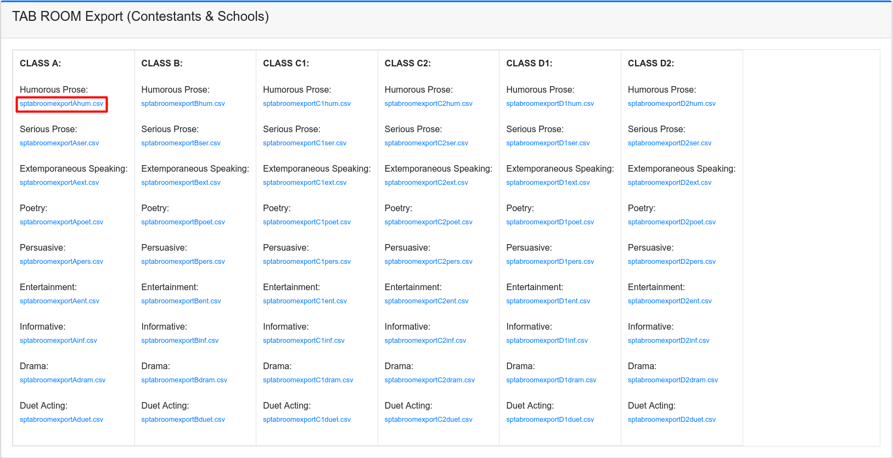{kind=link}
This is the TAB ROOM Export (Contestants & Schools) page. It displays exports categorized by class and event. To export data, click the respective CSV file link for a specific class and event.